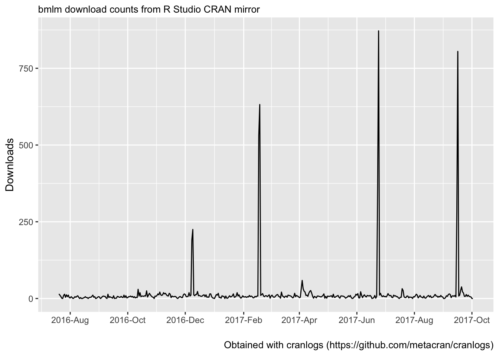

Sample of studies that have used bmlm.
Prestimulus Activity in the Cingulo-Opercular Network Predicts Memory for Naturalistic Episodic Experience (Cohen et al. 2017).

Cohen, Noga, Aya Ben-Yakov, Jochen Weber, Micah Edelson, Rony Paz, and Yadin Dudai. 2017. “Prestimulus Activity in the Cingulo-Opercular Network Predicts Memory for Naturalistic Episodic Experience.” bioRxiv, August, 176057. doi:10.1101/176057.